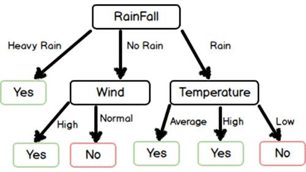

ID3算法——数据挖掘

文件：ID3dataEn.csv
1. ID3算法简介
- ID3算法最早是由罗斯昆（J.Ross Quinlan）于1975年在悉尼大学提出的一种分类预测算法，算法的核心是“信息熵（Information entropy）”。
- ID3算法通过计算每个属性的信息增益，认为信息增益高的是好属性，每次划分选取信息增益最高的属性为划分标准，重复这个过程，直至生成一个能完美分类训练样例的决策树。
2. Python编程实现ID3决策树建立算法
ID3决策树建立算法步骤：
- S1.决定分类属性；
- S2.对目前的数据表，建立一个节点N
- S3.如果数据库中的数据都属于同一个类，N就是树叶，在树叶上标出所属的类
- S4.如果数据表中没有其他属性可以考虑，则N也是树叶，按照少数服从多数的原则在树叶上标出所属类别
- S5.否则，根据平均信息期望值E或GAIN值选出一个最佳属性作为节点N的测试属性
- S6.节点属性选定后，对于该属性中的每个值：从N生成一个分支，并将数据表中与该分支有关的数据收集形成分支节点的数据表，在表中删除节点属性那一栏如果分支数据表非空，则运用以上算法从该节点建立子树。
2.1. 计算样本的信息期望
1 | # 计算样本的信息期望 |
2.2. 根据第 i 列属性值A划分子集
1 | #得到根据第 i 列属性值A划分成的子集 |
2.3. 得到最大信息增益条件属性列下标
1 | def chooseBestFeatureToSplit(dataSet): |
2.4. 建立ID3决策树核心函数
1 | # 决策树构造函数 |
2.5. 使用Matplotlib绘制决策树
1 | # ==================使用Matplotlib绘制决策树============================ |
2.6. 处理得到运动和不运动与天气之间的规则树
数据存放于ID3dataEn.csv文件
1 | sunny,85,85,unwindy,unsuitable |
2.7. 加载数据
1 | # 加载数据文件函数 |
2.8. 预处理 温度和湿度 数据
由于温度和湿度数据量过多，故将温度和湿度数据进行整合，将数据取十位整数
1 | #预处理 温度和湿度 数据 |
2.9. 主函数
1 | # main函数 |
2.10. 得到的决策树图如下所示

备注
运行平台：Arch Linux
运行环境：Intellij IDEA
待分类数据集文件：ID3dataEn.csv
源代码：ID3.py
相关文章